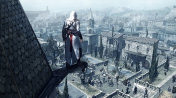
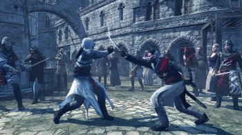
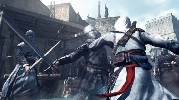

Родился Альтаир в 1165 году в Масиафе
и самого раннего детства тренировался, чтобы
пойти по стопам своего отца,который на тот
момент выполнял различные задания от братства.
Отец альтаира был казнен у него на глазах,
а казнил его никто иной как наставник братства
Аль-Муалим. Произошло это из-за того, что на одном
из заданий Умар (отец Альтаира) без причины убил
генерала сарацинской армии.
В один из периодов своей жизни Альтаир спасает
жизнь Аль-Муалиму и тот в свою очередь поручает
ему особо важное задание - найти священную
чашу,которая поможет объединить святые земли.
В процессе своих поисков Альтаир побывает в Дамаске
и Иерусалиме. Во время своих поисков Альтаир узнаёт,
что чашей является некая женщина по имени Адха. Через
некоторое время наш герой находит девушку в Иерусалиме,
влюбляется и отправляет её в плаванье, а через несколько
лет Альтаир узнает, что Адха мертва.
С этой точки стартуют события первой части игры.
Альтаир, нарушив заповеди кредо на одном из заданий,
получает от наставника второй шанс и выполняет задание
по убийству девяти целей.
По мере выполнения задания Альтаир узнаёт,
что все эти убийства являются личной прихотью
Аль-Муалима. Вернувшись в крепость Альтаир убивает наставника.
После этого яблоком Эдема завладевает друг Альтаира
- Аббас, но он не справляется с его силой. Альтаир
спасает Аббаса и забирает яблоко себе.
После вышеописанных событий Альтаир отправляется на Кипр,
чтобы убить главу тамплиеров. Там он находит свою вторую
любовь и женится на ней. В результате семейной жизни у Альтаира
рождаются двое детей.
В дальнейшем Альтаир проводит 8 лет на задании по убийству Чингисхана,
а по приезду в Масиаф обнаруживает, что в крепости произошел переворот,
устроенный опять же Аббасом Аббас представляет Альтаира виновным
во всех бедах Масиафа и последний вынужден бежать на 20 лет.
Спустя 20 лет Альтаир возвращается в крепость с печатями,
которые он нашел по указанию яблока и устраивает восстание.
Когда в 1258 году на Масиаф напали монголы,
Альтаир распоряжается закрыть его вместе с яблоком в библиотеке
и закрыть проход печатями. Печати же достались Николо Поло.
Альтаир умирает на стуле в центре библиотеки, держа в руках печать..
Название: Assassin's Creed Director's Cut Edition
Дата выхода: 9 апреля 2008
Жанр: Action, 3D, 3rd Person, Stealth
Разработчик: Ubisoft Montreal
Издатель: Ubisoft
Платформа: PC
Тип издания: Лицензия
Версия: 1.0.2.1
Язык интерфейса: Русский, Английский, Multi6
Язык озвучки: Русский, Английский, Multi6
Таблетка: Не требуется (DRM-Free от GOG)
Описание: Assassin's Creed — игра нового поколения, разработанная Ubisoft Montreal,
которая изменила представление об экшн-жанре. Пока другие игры претендуют называться
новым поколением, пытаясь впечатлить нас графикой и физикой, Assassin's Creed сливает
технологии, игровой дизайн, мотивы и чувства в мир, где вы вызываете хаос и становитесь
могущественным, но уязвимым агентом смерти.
Действие происходит в 1191 году нашей эры. Третий крестовый поход привел к возникновению
внутренних противоречий в Святой Земле. Вы, Альтаир, намерены остановить войну, подавляя
обе стороны конфликта.
Вы ассасин, беспощадный воин, окутанный завесой тайны. Ваши действия могут бросить
непосредственное окружение в хаос, а ваша жизнь будет определять события в течение
этого центрального момента в истории.
Системные требования:
Операционная Система: Windows XP, Vista, 7, 8, 10
Процессор: Двухъядерный 2.6 ГГц Intel® Pentium® D или AMD Athlon™ 64 X2 3800+
Видеокарта: 256 МБ совместимая с DirectX® 10.0 видеокарта или совместимая с
DirectX 9.0 с поддержкой Shader Model 3.0 или выше (Geforce 6800 или RADEON X1600)
Звуковая карта: Совместимая с DirectX 9.0 или 10.0 звуковая карта (звуковая карта 5.1)
Версия DirectX: Библиотеки Direct X 9.0 (Windows XP) или 10.0 (Windows Vista)
Оперативная память: 1 GB (Windows XP), 2 GB (Windows Vista)
Жесткий диск: 8 гб свободного места
Особенности:
Станьте ассасином — Овладейте навыками, тактикой и приемами использования оружия самого
смертоносного в истории и наиболее секретного клана воинов. Планируйте свои атаки, нападайте
безжалостно и боем прокладывайте себе дорогу к спасению.
Попробуйте эксклюзивный контент для ПК — Четыре эксклюзивных для ПК исследовательских миссий
делают игру лучше ее консольных предшественников, включая испытание-гонку по крышам — гонку до
определенного места — и испытание на скрытное уничтожение лучников, где игрок должен зачистить
определенную зону от всех лучников, чтобы помочь дружественным ассасинам.
Реалистичное и реагирующее окружение — Испытайте впечатление от живого, дышащего мира, в
котором все ваши действия имеют последствия. Люди реагируют на ваши действия и будут либо помогать,
либо мешать вам в выполнении ваших задач.
Действие с абсолютной свободой передвижения в пространстве — Устраняйте свои цели всегда, везде и
при любых обстоятельствах. Подкрадывайтесь к своей жертве в хорошо детализированном, исторически
достоверном, свободном окружении. Карабкайтесь по зданиям, седлайте лошадей, сливайтесь с толпой.
Делайте все, что необходимо для достижения своих целей.
Переживите эпические моменты Крестовых походов — Assassin's Creed погружает вас в реалистичную и
историческую Святую Землю 12-го столетия, предлагая правдоподобную графику, окружающую обстановку
и неуловимые, но проработанные нюансы живого мира.
Напряженное действие с корнями в реальности — Интенсивное действие смешанное с подвижной и точной
анимацией. Используйте широкий набор средневекового оружия в реалистичных дуэлях на мечах лицом к лицу с врагами.
Игровой процесс нового поколения — Патентованный движок, разработанный «с нуля» для консолей нового
поколения делает возможным органичный игровой дизайн, предлагающий открытый геймплей, интуитивную
схему управления, реалистичное взаимодействие с окружением и подвижную, но точную боевую механику.
Описание установки и запуска:
Запустить установочный файл setup_assassins_creed_2.1.0.23.exe.
Следовать инструкциям инсталлятора.
При необходимости установить русификатор Assassins_Creed_Rus_Full.exe (находится в папке со скачанной игрой).
Играть.


